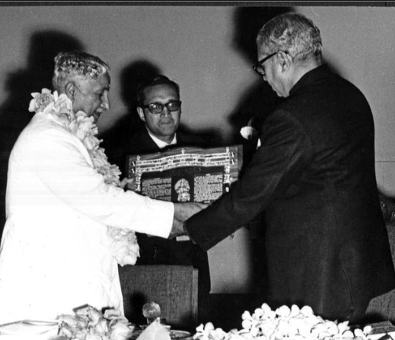

The Jnanpith Award is the oldest and the highest Indian literary award presented annually by the Bharatiya Jnanpith to an author for their "outstanding contribution towards literature". Instituted in 1961, the award is bestowed only on Indian writers writing in Indian languages included in the Eighth Schedule to the Constitution of India and English, with no posthumous conferral.
From 1965 till 1981, the award was given to the authors for their "most outstanding work" and consisted of a citation plaque, a cash prize and a bronze replica of Saraswati, the Hindu goddess of knowledge and wisdom. The first recipient of the award was the Malayalam writer G. Sankara Kurup who received the award in 1965 for his collection of poems, Odakkuzhal (The Bamboo Flute), published in 1950. The rules were revised in subsequent years to consider only works published during the preceding twenty years, excluding the year for which the award was to be given and the cash prize was increased to ₹1.5 lakh (equivalent to ₹31 lakh or US$38,000 in 2023) from 1981